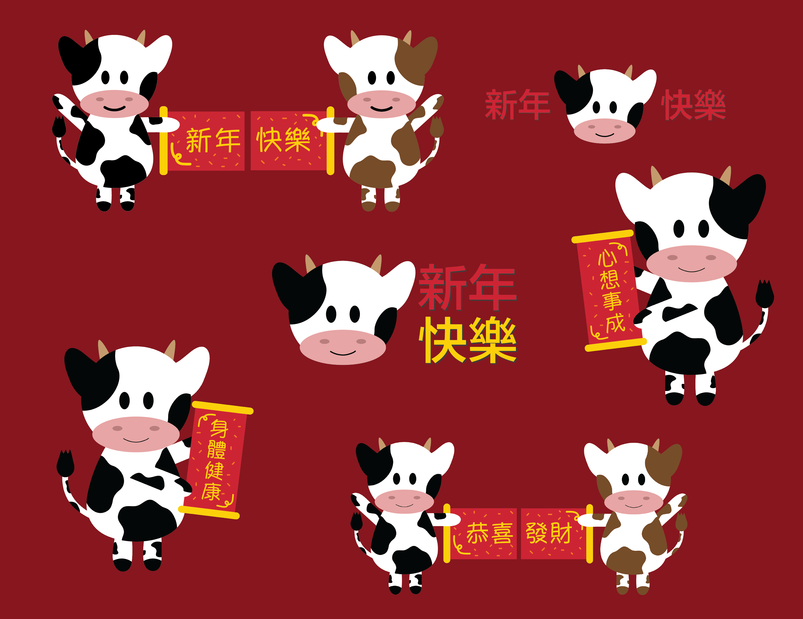
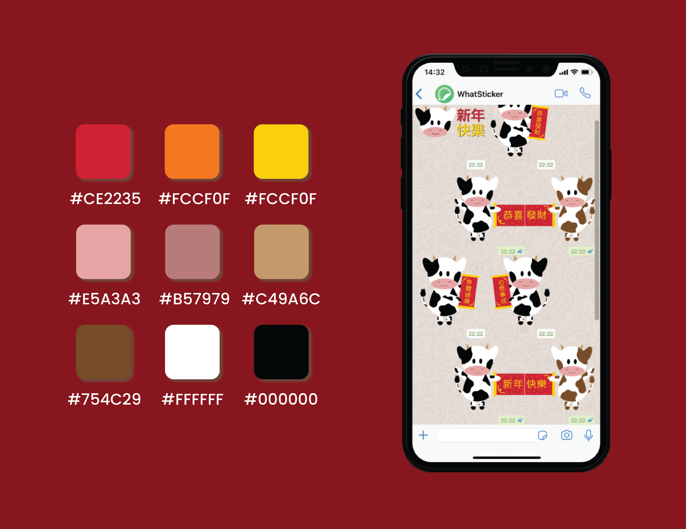

Year of the Ox Stickers
In my family and many others, sending stickers over messaging apps is a tradition for all major holidays. This Chinese New Year holiday, I decided to design my own set of stickers to send to family and friends. Since the Chinese New Year zodiac this year is the ox, I created some oxes holding fai chun with different festive greetings.
My sticker pack accumulated over 10,000 downloads within 24 hours of uploading! Check out the full sticker pack here!
Tools used: Adobe Illustrator

